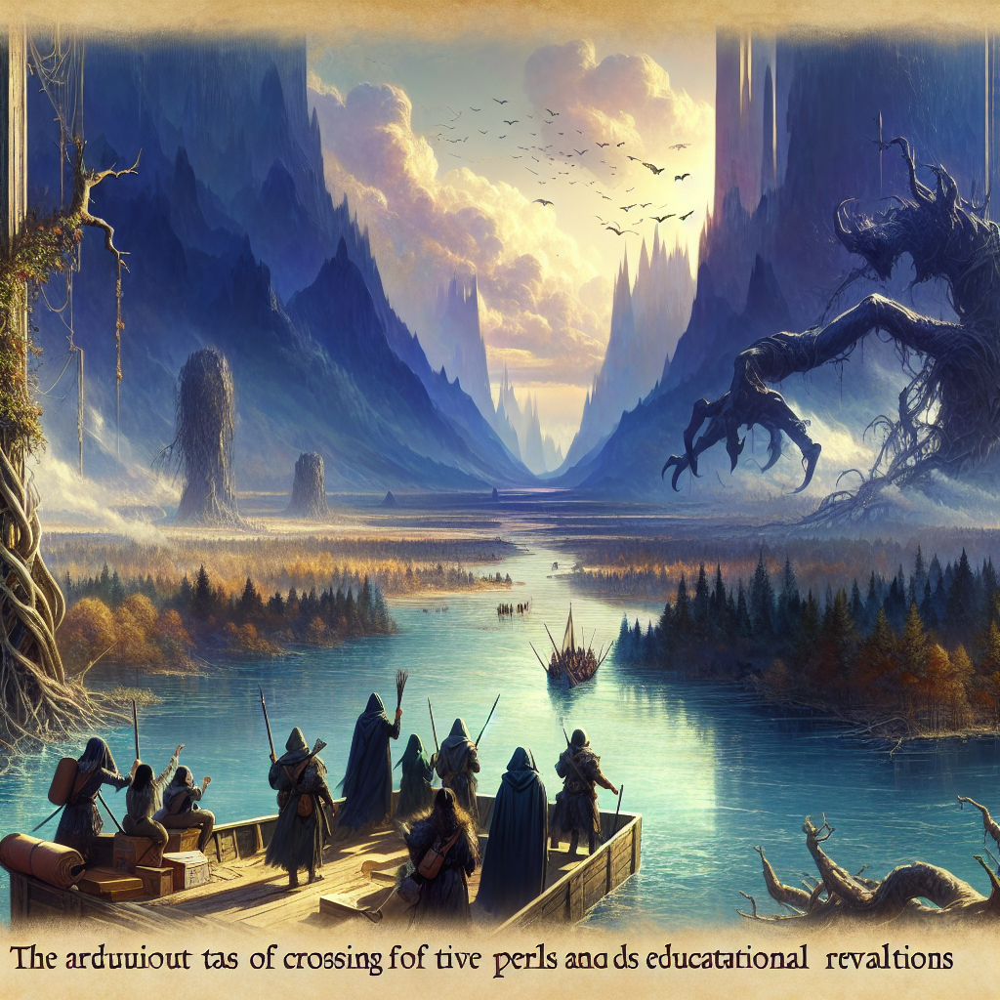
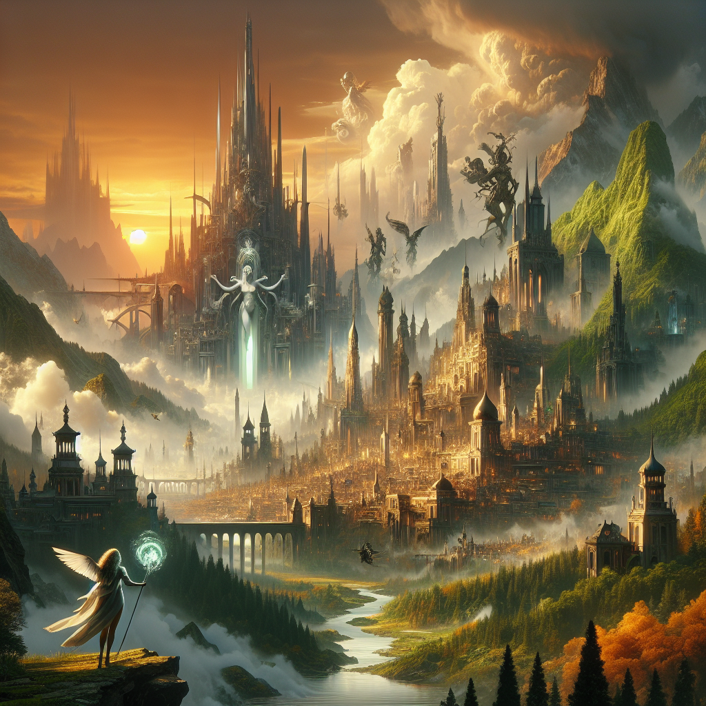
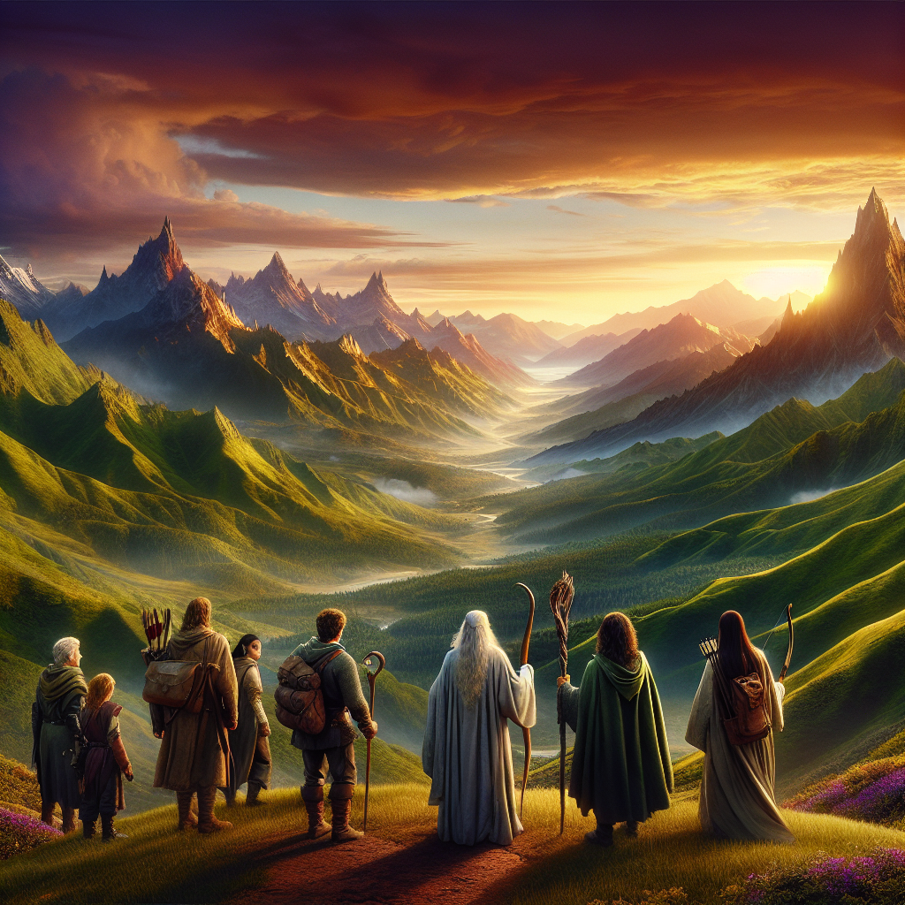

Calypso is a young woman who lives a happy life in her village. One day whilst she was going home from her work in the fields, she meets an old woman, she never saw before. This woman tells her that only after losing everything, her wishes will be fulfilled and that she needs to traverse the 3 rivers. Calypso finds this weird, but she gets no further explanation for the woman's remarks. The woman disappears after that to never be seen again and Calypso forgets about the incident. A couple of days later a devastating storm destroys her village, Callypso loses everything, her family, her house, her job. Only two kids she knows and a dog are rescued in the after Calypso remembers now the old woman and what she said. She decides to take whatever she has and to look for the three rivers to traverse them and siscover what lies beyond. She will reach the three rivers after lots of adventures, discover the identity of the old woman and finally reach the City of Amber with the two kids and the dog where she will start a new life.
In the days when the soft whispers of the wind carried the tales of the old to the ears of the young, there was a village cradled in the embrace of the verdant hills of Eldoria. Here, amidst the simple abodes of wood and thatch, lived Calypso, a maiden fair of heart and bright of spirit. Her days were spent toiling in the fields under the sun's golden gaze, and her evenings were filled with the laughter of kin and the warmth of hearth fires.
It was upon such an evening, when the stars had just begun to unveil their nightly splendor, that a stranger came to the village. An old woman, cloaked in garments of indeterminate hue, her eyes shrouded in the depths of countless ages. Few noticed her arrival, for she moved with the silence of a shadow, and it was to Calypso that she made her way, as if drawn by a force unseen.
Calypso beheld the old woman with curiosity and kindness, for it was the way of her people to welcome the traveler and the talebearer. "Good evening to you," Calypso greeted the stranger, her voice as melodic as the brook that danced through the village. "What brings you to our hearthside?"
The woman's lips parted, and her voice, though frail, carried the weight of the mountains. "Child of Eldoria, listen well, for the threads of your fate have been woven with a pattern most rare. You shall know hardship as few do, for only through loss can one's deepest desires take root and flourish."
Calypso's brow furrowed, a sense of foreboding dimming the light of her eyes. "What mean you, good mother? Speak plainly, I beg."
But the old woman's gaze pierced through the veils of the now and the then, her words a riddle wrapped in the enigma of time. "Three rivers you must seek, O bearer of the silent flame. Three crossings shall lead you to the fulfillment of your heart's silent yearning. Remember, when all is torn asunder, the path shall reveal itself to you."
With these cryptic words, the old woman turned, her form blending with the night until she was but a whisper in the tales of the village. Calypso pondered the woman's prophecy, but as the days followed nights and the wheel of time turned, the memory of the encounter grew dim, like a dream upon waking.
The wheel, however, spun inexorably towards destiny. The skies, once a cerulean canvas, began to brood with dark omens. A tempest, fierce and unyielding, descended upon the village with the wrath of the ancient gods. It was a storm such as none had witnessed, and in its wake, it left naught but destruction. Calypso's world, once filled with the certainties of the morrow, lay in ruins. Family, home, and hearth—all were torn from her in the storm's cruel grasp.
In the aftermath, as she wandered through the remnants of her life, two children of the village, their eyes wide with the shock of survival, came to her side. With them, a dog, loyal and steadfast, its coat matted with the tears of the skies. It was then that the old woman's prophecy unfurled itself in Calypso's mind, clear as the first light of dawn. She knew what she must do.
With resolve kindling within her breast and the flame of purpose igniting her steps, Calypso set forth. She would seek the three rivers of which the old woman spoke, bearing only the company of the two children and the faithful hound. They would face the unknown together, their journey a testament to the indomitable spirit of those who dare to dream beyond the wreckage of the world.
For Calypso, the path forward was shrouded in mystery, yet the gift of foresight, bestowed by a stranger under the cloak of evening, became her guide. Thus began the odyssey of Calypso, an odyssey that would lead her through perils untold and wonders unimagined, towards a destiny that shimmered like a distant city wrought from the purest amber.
In crafting this prologue, I have endeavored to emulate the lyrical and epic style of J.R.R. Tolkien's "The Lord of the Rings," while establishing the setting, characters, and inciting incident that will propel Calypso on her journey through the novel "The Three Rivers."
Calypso's eyes swept over the familiar landscape of her village, a tapestry of cottages nestled in the embrace of verdant hills. Her heart, so often light with the songs of the earth and the laughter of her kin, now lay heavy in her bosom. The words of the old woman, as elusive as a wisp of smoke, echoed in her thoughts, foretelling of loss and a journey through the veins of the world.
The day had begun with a whisper of unease; the birdsong was mute, and the leaves of the trees shivered without a breeze. As the sun climbed, it was swallowed by a brooding tumult of clouds, as if the very heavens were cloaking themselves in mourning garb. By midday, the skies unleashed their fury. A storm, black as a raven's wing and fierce as a dragon's wrath, descended upon the village with a primal roar.
Calypso stood at the threshold of her home, her gaze fixed on the tempest as it tore through her world. The winds, like vengeful spirits, shrieked and howled. They clawed at the thatched roofs and wrestled with the sturdy oaks, which groaned under the onslaught. The skies wept a deluge that soon became a torrent, rivers of water coursing through the streets, swallowing all in their path.
The villagers, caught in the maelstrom, scrambled for shelter, their cries lost in the cacophony. Calypso, with a heart now a crucible of fear and resolve, plunged into the tempest's heart to aid her kin. She found her steps leading her to the old woman's last known haunt, though she knew not why. But there was naught but the fury of the elements where the crone had once stood, her prophecy now a grim specter in the storm's eye.
As the hours waned, the fury of the heavens seemed to grow ever more spiteful. Calypso beheld the destruction of her village with a sorrow that threatened to engulf her. Homes were sundered, fields laid waste, and the fabric of her life was unraveled as if by the cruel hands of fate.
Yet, amidst the chaos, there was a spark of hope. Two children, orphans of the storm, huddled beneath the remnants of an ancient willow. With them, a dog of no particular breed, but of a heart as stout as any hound of legend. Calypso gathered them close, her resolve hardening like steel. They were her charge now, a flickering flame of the future in the ruin's shadow.
As the storm raged on, Calypso led her small fellowship to what remained of the village square. The devastation lay before them like a lament; the once merry market was naught but a graveyard of memories. Yet, it was here, amidst the broken stones and shattered dreams, that Calypso remembered the old woman's words with a clarity that pierced the gloom. "Only after losing everything, your wishes will be fulfilled." The riddle of her prophecy was now a quest laid at Calypso's feet.
As the night drew its dark cloak over the world, the storm abated, leaving behind a silence as profound as the void between stars. Calypso, with the two children and their canine companion, looked upon the remnants of their lives, knowing they could not dwell in the past's ashes. The three rivers awaited, and with them, the promise of a destiny yet unwritten.
With dawn's first light piercing the shroud of clouds, they set forth. The village, once vibrant with life, was now a tombstone upon which was etched the end of one chapter and the beginning of another. Calypso, bearing the weight of loss and the light of hope, stepped into the unknown, guided by the enigmatic words of a specter, and driven by the indomitable will of the human spirit.
And so, the journey of Calypso and her companions began. Through the ruins of a life once lived, towards the rivers that would lead them to truths untold and lands unseen. The storm of fate had ravaged their world, but from its ashes rose the seeds of a new odyssey, a quest that would forge legends and echo through the annals of time.
The atmosphere and language in this chapter are inspired by the epic and descriptive style of J.R.R. Tolkien's "The Lord of the Rings," with a focus on setting an epic tone, rich descriptions of nature and emotions, and a sense of a grand journey ahead.
The morning after the tempest had laid its wrath upon the land, the sun rose with a cautious eye, peering through tattered clouds as if to survey the damage it had missed during its nightly absence. Amidst the ruin of what was once a quaint village, stood Calypso, as if a statue amidst the debris—a testament to endurance and the resilience of the human spirit. Her eyes, though red with mourning, were set with a new resolve that seemed to have been kindled by the very forces that sought to extinguish her light.
Calypso had once known every corner of her home, every laughter-lined face that filled its streets and fields. Now, it was as if the very earth had betrayed them, giving way to a tempest that had torn the fabric of their lives asunder. Her heart ached for her lost kin, for the warm embrace of her mother, and the jovial tales of her father. They, like so many others, had been claimed by the storm's merciless fury.
Yet, in the aftermath of such calamity, fate had seen fit to spare a few. Two children, Orin and Elara, brother and sister, clung to each other, their eyes wide with the innocence that had yet borne witness to the world's harsh truths. With them was Argos, a loyal hound whose bark was now muted by the weight of the world's sudden cruelty. These three, now under Calypso's care, were the unlikely companions she would have in the days to come.
The old woman's prophecy, once a distant murmur in the recesses of her memory, now echoed with the clarity of a clarion call. To traverse the three rivers—it seemed a mad quest, born of the delirium that follows despair. But what else remained for them in this place of sorrow? Calypso felt the stirrings of purpose, and it was this nascent hope that drew her gaze to the horizon.
They had little to take with them, for the storm had been thorough in its theft. A few scraps of food, a tattered map, and the clothes upon their backs were their only possessions. Yet, as they stood at the edge of their shattered world, it was clear to Calypso that they could not remain. The rivers called to her, each a promise of healing and perhaps, in time, a new beginning.
She knelt before Orin and Elara, her voice soft yet unwavering, "Ye have seen much sorrow, little ones, and I cannot promise the path ahead will be free of shadows. But I can promise that I will protect ye with all the strength that remains in me. Will ye come with me on this quest, to seek the rivers and find what lies beyond?"
The children, with youth's adaptability, nodded their assent, their trust in Calypso a fragile thing that she would guard with her life. Argos, sensing the gravity of their choice, gave a low whine before nuzzling into Calypso's hand, his loyalty not given to the place, but to the souls that remained.
Thus, they set forth, leaving behind the ruins of their past. Their journey would take them through woodlands where the leaves whispered secrets of ancient days, across meadows where the grass sang underfoot, and over hills that held the memories of the earth deep within their stony hearts.
The first trial they met was not of the land, but of the heart. As they traversed the once-familiar woods, they stumbled upon the remnants of other lives dashed against the rocks of fate—a doll here, a broken plow there, each a silent testament to the lives that had been. But Calypso led them through, her spirit a burning torch against the encroaching darkness of despair.
As the day waned and night began to unfurl its starry mantle across the sky, they made camp by the remnants of an old wayfarer's lean-to. Here, protected by the embrace of ancient trees, they found respite from their journey. Calypso watched over the children as they slept, her thoughts a tangled skein of hope and worry, while Argos lay by, his ears twitching at the sounds of the nocturnal forest.
In the quiet hours of the night, Calypso pondered the journey ahead. The rivers were no mere streams to be easily forded; they were legends whispered in awe, each a guardian of the thresholds of destiny. She knew not what perils they would face, what wonders or horrors lay in wait. Yet, within her, a voice unwavering spoke of purpose and of the light that gleamed beyond the rivers—of the City of Amber, where a new dawn awaited them.
And so, by the light of the first morning star, they rose, their hearts alight with the flame of adventure. The path ahead was uncharted, the rivers a distant call, but Calypso, Orin, Elara, and Argos walked on, their steps an anthem of survival, their eyes set upon the horizon, where the future beckoned with the promise of renewed life.
Calypso, with the weight of the old woman’s prophecy heavy upon her shoulders, steeled her heart for the journey that lay ahead. The two children, whose eyes were wide with both fear and wonder, clung to her with unwavering trust, and Argos, the dog with fur like the night, padded silently by her side.
As the first blush of dawn painted the sky with strokes of crimson and gold, they set forth from the ruins of what was once a vibrant village, now but a memory etched in sorrow. The path they trod was untamed, winding through the remnants of the storm's wrath, and the land itself seemed to mourn the passing of the life it once cradled.
The way was fraught with peril, for the storm had woken more than just the elements. Creatures of shadow and malice stirred, sensing the fragility of the world. Yet Calypso's resolve did not falter, for within her burned the ember of hope, a hope that the three rivers would lead her to a destiny greater than any she could fathom.
Through forests deep they journeyed, where the trees stood like ancient sentinels, their roots delving deep into the secrets of the earth. The air was filled with the whispers of leaves, speaking in tongues lost to the innocence of man. Calypso felt their words brush against her skin, a language of the old world that she yearned to understand.
The children, Lysander and Elara, found solace in the stories Calypso would weave to keep the shadow at bay. She spoke of the City of Amber, a place of such splendor that the very rivers yearned to embrace its walls. Her tales were a balm to their spirits, and even Argos would listen, his ears perked, as if within these fables lay the scent of a trail he wished to follow.
As the days passed, the terrain grew more treacherous, the mountains loomed like giants over them, their peaks hidden by a veil of clouds. It was here that they encountered the first of the rivers, the Aenigma. It coursed through the land with a ferocity that belied its beauty, its waters a tapestry of blues and greens that danced in the light.
The crossing was arduous, for the Aenigma did not part willingly for any traveler. The waters tested their courage, pulling at their limbs with icy fingers and threatening to sweep them into its depths where secrets drowned and daylight faltered. But Calypso would not be swayed; her determination was a beacon that guided Lysander and Elara across the treacherous currents, with Argos braving the swirls alongside them.
Upon reaching the far bank, drenched and weary but unbroken, they were greeted by the sight of a forest unlike any other. The leaves shimmered with a silver sheen, and the trunks of the trees bore carvings of ancient runes, their meanings lost to time. Calypso knew that this was the Sylvan Expanse, a realm where the veil between worlds grew thin, and the spirits of the forest held sway.
It was within the Sylvan Expanse that they met the first of their unforeseen guides, a creature of the wood whose visage was both fearsome and fair. It spoke in riddles, its words a puzzle that Calypso unraveled with a wisdom she did not know she possessed. The creature, satisfied with her answers, bestowed upon them a gift – a vial of liquid light that would illuminate even the darkest path.
With the vial clasped tightly, they ventured deeper into the forest, where the light of day grew scarce, and the shadows lengthened into twilight. Calypso's thoughts often drifted to the old woman, the harbinger of her fate, and she wondered if their paths would cross once more.
Through many a hardship and marvel did they travel, the bonds between them strengthening with each passing trial. Calypso, Lysander, Elara, and Argos, companions forged by fate's capricious hand, moved ever onward, their eyes set upon the horizon, where the mingling waters of the three rivers and the promise of the City of Amber awaited.
And so it was that the quest for the Three Rivers unfolded like a tapestry woven of courage and hope, each thread a testament to the resilience of those who seek the light amidst the encroaching dark.
Within the heart of the sprawling forest, where the whispers of ancient trees stretched to the skies, Calypso, with the burden of fate upon her shoulders, led her small fellowship of two children and their loyal canine companion. The path had grown treacherous, and the air hung heavy with a sense of foreboding.
The sun dipped low, casting long shadows upon their journey, and it was within this twilight hour that they came upon the first of many guardians that had been whispered of in tales of old. Before them stood a mighty gate, its stones worn by the passage of time, yet it bore no mark of neglect. It stood proud and imposing, as if it were the mouth of the world, ready to swallow any who dared to trespass.
It was then that a figure emerged from the shadows, a being whose presence was as formidable as the gate itself. Cloaked in garments that seemed woven from the very night, the guardian's eyes held the light of stars, piercing and unwavering. This was the Keeper of the Paths, the one who weighed the hearts and intentions of all who sought passage.
"Who seeks to wander through realms not their own?" the guardian's voice, both ancient and timeless, echoed through the trees.
"I am Calypso," she answered with a voice that held the tremor of her resolve, "and with me are those who have lost their home to the wrath of nature. We seek the Three Rivers, as foretold by the prophecy."
The guardian regarded them, a slow, thoughtful gaze that seemed to peer into their very souls. "Many are the paths that lead to the rivers, and many are the trials that lie therein. What is it that fuels your journey?"
Calypso stepped forward, her heart heavy with the memory of loss and the flicker of hope that had been kindled by the old woman's words. "We seek a new beginning," she confessed, "a place beyond the rivers where the memory of our sorrows might fade into the tapestry of a new life."
The guardian nodded, and from within the folds of their cloak, produced a lantern, its light soft and silver. "Then let this light guide you through the darkness that awaits. But be warned, child of fate, the path is fraught with creatures that will test your very being."
With a gesture, the gate began to open, its movement silent despite its mass. The guardian stepped aside, allowing them passage, but as they moved to cross the threshold, a growl cut through the silence.
The dog, ever vigilant, stood with hackles raised, its gaze fixed upon the shadows that shifted and danced just beyond the light of the lantern. From the dark, eyes gleamed, reflecting the silver light—a pack of wolves, their forms ethereal and ghostly, barred the way.
The children clung to Calypso, their fear a palpable thing, but she stood resolute, the lantern's light held high. The wolves circled, a test of courage and intent, their forms phasing in and out of sight.
"Remember the words of the guardian," Calypso whispered to her companions, her voice steady though her heart raced. "We must not falter in our resolve."
As if in response to her declaration, the wolves halted, their eyes assessing the travelers before them. Then, as if satisfied with the measure of their hearts, they vanished into the night, leaving the path clear.
The company moved forward, the lantern carving a path of light through the darkness. As they traversed the forest, they encountered other creatures, each a guardian in its own right: serpents that whispered riddles of the past and future, great birds that challenged them with the weight of their wings, and whispering vines that sought to ensnare the unwary.
Through each trial, Calypso's resolve hardened like steel tempered in the forge of adversity. The children, too, found strength in her example, and the dog protected them with a loyalty that was as fierce as any blade.
At last, as the night waned and the first light of dawn touched the horizon, the forest gave way to open land. The path stretched out before them, clear and unobstructed, leading to the distant shimmer of water—the first of the Three Rivers.
The guardian's lantern flickered and then extinguished, its purpose served. Calypso looked back upon the shadowed forest, knowing that the trials they had faced were but a prelude to the challenges that lay ahead.
With the first river in sight, the company pressed on, the new day's promise bolstering their spirits. They were travelers on the cusp of destiny, and the path they walked was one of transformation—a journey that would lead them to the City of Amber and the dawning of a new life.
In the realm of twilight, where the shadows of the past mingle with the whispers of the future, there lay the First River, a vast serpent of water coiling through the land, separating the known from the unknown. It was here that Calypso, with the children, Myra and Lysander, and the faithful hound, Argos, stood upon the bank, gazing into the murky depths that promised both peril and passage.
The river was not merely a body of water; it was a test, a trial of heart and spirit. As Calypso looked upon its surface, she recalled the ancient words of the old woman, words that now rang with the clarity of prophecy. They were to lose all, to gain all, and the river before them was the first of three thresholds.
The crossing would not be easy. The waters ran fast and deep, and as the sun dipped low, painting the sky with the hues of fire and blood, a mist arose from the river, as if it were a living thing, breathing and watching, waiting for the travelers to make their first move.
"Calypso," young Myra said, her voice quivering with the chill of evening and fear, "how shall we cross? The river is wide and the current strong. I fear we may be swept away."
Calypso, with the weight of leadership upon her shoulders, knew that to falter here would be to doom their quest before it had truly begun. "We shall find a way, Myra. The rivers are but a path to our destiny, and we must walk it with courage."
Argos barked, his eyes alight with a strange understanding, as if he too knew the importance of their quest. It was then that Calypso noticed a cluster of trees, their branches bowed with the weight of age and wisdom. Amongst these sentinels of the forest, a natural raft was formed from fallen timber, as if nature itself conspired to aid them in their crossing.
With the ingenuity born of necessity, Calypso and Lysander worked to secure the timbers with vines and brambles, fashioning a precarious but hopeful means of passage. As night fell, and the stars emerged like jewels upon the velvet cloak of the heavens, they pushed their makeshift raft into the water, the river accepting it with a gentle ripple.
The crossing was fraught with the whispers of the water, speaking of ages past and the many souls it had claimed. The mist clung to them, damp and cold, a spectral embrace that sought to confuse their senses and lead them astray. But Calypso, with her heart set upon the far shore, guided them through the fog with words of encouragement, her voice a beacon in the gloom.
Halfway across, the river's mood shifted, as if angered by their audacity. The waters churned and the raft bucked like a wild steed, threatening to cast them into the inky depths. Lysander clutched Myra tightly, his knuckles white with fear, his eyes wide with the terror of the unknown. But Calypso would not yield; she stood firm, her resolve a match for the river's wrath.
It was then, in their darkest moment, that a light appeared upon the water, a glow that cut through the night and the fog, guiding them to safety. The source of this light was a mystery, perhaps a gift from the very old woman who had set them upon this path, but to Calypso and her companions, it mattered not. It was hope, and hope was all they needed.
With the light as their guide, they reached the far shore, their bodies weary but their spirits unbroken. They had passed the first of their trials, and the land before them promised both danger and wonder in equal measure. Calypso knew that the road ahead would be long and fraught with perils, but the crossing of the First River had shown them that together, they could face the darkness and emerge into the light.
As they rested upon the bank, catching their breath and tending to their frayed nerves, Calypso looked back across the river. The mist had cleared, and the waters were calm once more, as if the river had tested them, found them worthy, and now lay at peace.
"Come," she said, rising to her feet, her eyes alight with a fire born of triumph, "we have rivers yet to cross and a prophecy to fulfill. The City of Amber awaits, and we shall not be found wanting."
And so, with the first of their trials behind them, Calypso and her companions set forth into the night, beneath the watchful gaze of the stars, their hearts bound by a shared destiny and the unyielding will to see it through to the end.
Chapter 7: The Labyrinth of Shadows
In the twilight of the world, where light fought a losing battle against the encroaching dark, the travelers found themselves upon the threshold of a foreboding realm. Calypso, with the two children, Alaric and Elara, and their faithful canine companion, Argos, stood at the entrance to the Labyrinth of Shadows. This land, nestled betwixt the rivers, was shrouded in mystery and fraught with peril.
The terrain before them undulated like the surface of a disturbed pool at dusk, and the path they must take was veiled in obscurity. No sunlight pierced the dense canopy above, and the air was thick with the scent of earth and decay. The trees themselves seemed to whisper secrets in a language too ancient for the ears of mortals.
Calypso gazed into the brooding dark. The prophecy of the old woman echoed in her mind, a specter that seemed to mock her with its enigmatic portents. She tightened her grip on the staff she had acquired in the Crossing of the First River, the wood warm and reassuring against her palm. With a nod to her companions, she ventured forth into the labyrinth, a glimmer of resolve in her eyes that belied the tremor in her heart.
The path wound and twisted like a serpent, leading them deeper into the gloom. Shadows played tricks upon their eyes, conjuring phantoms that danced just out of sight. Argos growled low in his throat, sensing the unseen dangers that lurked within the dark.
Suddenly, a wisp of light appeared, bobbing and weaving through the trees. Alaric reached out a hand, entranced by its beauty. "Look, a lantern!" he exclaimed, his voice a beacon of hope in the oppressive darkness.
"Nay, child," Calypso warned, pulling him back. "It is but a will-o'-the-wisp, a trickster light to lead us astray. We must not follow."
They pressed on, the world around them a tapestry of shadows and half-glimpsed shapes. Whispering voices rose and fell with the wind, a cacophony of sound that threatened to overwhelm their senses. Calypso's thoughts turned to the enigmatic old woman, the mysterious harbinger of her fate. What purpose did these trials serve? What destiny awaited them beyond the rivers?
Time lost all meaning in the Labyrinth of Shadows, the sun and moon mere memories in this place of eternal twilight. Fatigue clawed at their limbs, hunger gnawed at their bellies, yet they moved forward, driven by an invisible force that would not let them succumb to despair.
In the heart of the labyrinth, they encountered a creature born from the darkness itself. It was a specter, a being of malice and malevolence that barred their path with a hiss of disdain. The air around it shimmered with power, and its eyes were like pits that threatened to swallow all light.
Calypso stepped forward, her staff held before her like a talisman. "We seek passage," she said, her voice steady despite the fear that knotted her insides. "We mean no harm to your realm."
The specter regarded her with cold amusement. "Many have sought passage," it rasped, the sound like the scraping of stone on stone. "Few have found it. What makes you think you are worthy of traversing the Labyrinth of Shadows?"
Calypso's mind raced, searching for an answer that would appease the creature. Then, in a moment of clarity, she spoke the truth that resided in her heart. "I seek to fulfill a prophecy, to find a new beginning in the City of Amber. My worthiness is not for me to decide, but I will face whatever trials I must to protect those in my care."
The specter seemed to consider her words, its form wavering like smoke caught in a breeze. After a long, tense silence, it stepped aside, granting them passage. "Go then, seeker of destiny," it hissed. "But know this – the labyrinth is not the greatest challenge you will face. The rivers are but reflections of the soul, and you will be tested."
With hearts heavy yet filled with a newfound determination, the travelers continued their journey through the labyrinth. They emerged on the other side, the trials behind them but the knowledge that greater challenges lay ahead heavy on their spirits.
The Labyrinth of Shadows had been a crucible, a place of transformation where the bonds between them had been forged stronger in the fires of adversity. Calypso and her young charges, with their loyal Argos at their side, now faced the future with a courage that had been tempered in the darkness, ready for whatever fate the rivers might bring.

The sun, a golden disc in the sky, began its descent towards the horizon as Calypso and her young companions approached the banks of the Second River. It flowed broader and more tumultuous than the first, its waters a deep cobalt, churning with a ferocity that spoke of hidden currents and treacherous depths. The dog, whom the children had named Whisper for his quiet manner, stood beside Calypso, his ears perked and his gaze intent upon the rushing water.
As they stood at the river's edge, the lessons of the First River were not lost upon them. They knew that each crossing demanded respect, for the waters were as much a guardian as they were a gatekeeper to the paths that lay ahead.
"There must be a way across," Calypso mused aloud, her eyes searching the riverbanks for a sign, a bridge, or a ford that might aid their passage.
The elder of the two children, a boy named Theo with a mop of unruly hair and eyes that carried the wisdom of one who had seen much in his short years, pointed downstream. "Look there, Calypso! A line of stones breaks the surface. They might be a path for us."
Indeed, a series of stones, large and flat-topped, stretched across the river like the vertebrae of some ancient leviathan. Yet as they approached, it became clear that the stones were slick with moss, and the gaps between them were wider than they had seemed from afar.
Calypso knelt and touched the water, feeling the cold bite at her fingertips. "These stones may hold our weight, but the crossing will not be without peril. We must be swift and sure of foot."
The younger child, a girl named Elara with hair like the raven's wing and eyes that shone bright with a fearless spirit, nodded. "We can do it, Calypso. You'll see."
And so it was decided. Calypso led the way, her boots firmly planted on the first stone. Whisper followed, his canine grace belying the danger of the crossing. The children clung to each other, Theo going before Elara, his hand outstretched to aid her balance.
Each step was a gamble against the relentless pull of the river. Yet with each leap and bound, they grew more confident, their movements more fluid, until they reached the final stones.
It was there that calamity struck. A misstep, a slip of the boot, and Theo cried out as he lost his footing, teetering perilously close to the river's icy embrace. Calypso's heart lurched, and she spun, reaching out to grasp the boy's arm, her own balance put to the test.
Whisper barked, a sharp sound that cut through the roar of the river, and Elara, with a courage that belied her tender years, lunged forward, adding her strength to Calypso's. Together, they pulled Theo back from the brink, and for a suspended moment, they stood as statues, each aware of the thin line between life and the cold depths.
With the danger past, they completed the crossing, each stone now a tiny victory, until they stood once more on solid ground. Calypso embraced the children, her heart still racing from the near disaster.
"We have bested the Second River," she whispered, her voice a mixture of relief and pride. "But let us not forget the lessons it has taught us."
They made camp that night upon the riverbank, the fire's glow warding off the chill of the evening. As the stars emerged one by one, like tiny lanterns in the great tapestry of the night, Calypso reflected on the journey that lay behind and the paths that stretched before them.
She thought of the old woman and her cryptic words, and how each step they took seemed to weave them deeper into the fabric of a fate not fully understood. But within her heart, a flame of hope had been kindled, and she knew that whatever trials the Third River might hold, they would face them together.
For now, the Second River was behind them, its waters a testament to their resolve and the strength of the bonds they had forged in the face of adversity. And as the fire dwindled to embers, Calypso looked upon Theo and Elara, their faces peaceful in slumber, and she knew that the old woman's prophecy was not a curse, but a journey towards a destiny that awaited them in the City of Amber.
Calypso, with the wisdom of the two rivers already woven into her spirit, felt the weight of the old woman's words heavier upon her shoulders than ever before. She had come far from the ruins of her once-joyful village, through perils unnumbered and landscapes as treacherous as the hearts of men, yet the enigmatic figure of the elder seemed as a beacon, guiding yet elusive.
In the quiet hours of the night, as the moon cast silver spells upon the earth and the stars whispered secrets to those who would listen, Calypso pondered the old woman's prophecy. It was a riddle wrapped in mystery, a tale unfinished, a song with its verses yet unsung. The children, whose eyes had seen horrors yet shone with the innocence of youth, slept soundly, their dreams untainted by the darkness that had touched their lives. The dog, ever-vigilant companion, lay curled at Calypso's feet, its breathing a steady rhythm in the silent night.
As dawn broke and painted the world in hues of hope, the answer came to her as gently as the light that dispelled shadows. The old woman was no mere vagabond of fate; she was the keeper of destinies, the weaver of the threads that bound the world. She was the Oracle of the Rivers, her life a testament to the forces that shaped the land.
Calypso recalled the visage of the elder, a tapestry of time etched upon her features, her eyes holding the depth of the ages. Her words had been a beacon, and Calypso realized the storm had not been misfortune's cruel hand but the catalyst for destiny's unfolding.
"Only after losing everything, your wishes will be fulfilled," the Oracle had said. And so it was, that loss became the chisel that sculpted Calypso's true purpose from the marble of her existence.
With new understanding, Calypso shared her revelation with the children. Their eyes widened with wonder as they listened, the dog raising its head in silent acknowledgment. Together, they set forth towards the Third River, their hearts buoyed by the knowledge of the Oracle's true identity.
The river lay before them, a serpentine path that cut through the land like a gleaming scythe. It was the final barrier, the last test, and within its waters flowed the promise of the future. Calypso stepped forward, her resolve unyielding, the children's hands in hers, the dog at her side. They would cross the river, and they would find what lay beyond.
As the waters embraced them, the Oracle's prophecy echoed through Calypso's mind, a melody that now sang of triumph and rebirth. The enigma of the elder was an enigma no more, and Calypso understood that the journey's end was but the beginning of a grander tale, one that would be told for generations to come.
The City of Amber awaited, shimmering on the horizon like a dream made manifest. But that was a tale for another time, a story yet to be written in the annals of fate.
For now, Calypso, with the light of knowledge in her heart, would cross the Third River, and she would do so unafraid. For the old woman, the Oracle of the Rivers, had shown her the path, and it was a path she was destined to tread.
(With respect to the style of J.R.R. Tolkien, this passage attempts to capture the reflective and descriptive nature of his writing, though the complexity and depth of his work are truly unique and not easily replicated.)
The skies brooded with the weight of omens as Calypso and her small fellowship approached the brink of the Third River. This was the river of legends, the Silmarin, whose waters were told to run deeper than the roots of mountains and hold secrets as old as the world itself. The land about them had grown hushed, as if nature itself held its breath in anticipation of the trial that lay ahead.
The two children, Theo and Lila, clung to each other, their eyes wide with a mixture of fear and wonder. Argos, the loyal hound, padded close by Calypso’s side, his senses alert to the unknown dangers that might lurk beneath the silvery mist that rose from the river's surface.
Calypso’s heart throbbed in her chest, each beat a drum of war calling her to face what lay ahead. She remembered the words of the old woman, spoken as if from another age, a voice of foretelling that had set her on this path. Since the devastation of her village, Calypso had crossed two rivers, each a crucible that forged her spirit and resilience. This final crossing was the culmination of her odyssey, the threshold between her shattered past and the promised haven of the City of Amber.
The bank was strewn with stones, polished by the relentless flow of the Silmarin, and the water whispered of journeys untold. Calypso glanced back at the children, offering a smile that she hoped might ease their worries. "We've come so far," she said, her voice steady despite the storm of emotions within her. "The Third River will bear us to our new beginning, just as the old woman foretold."
Theo, ever the bold spirit, nodded, his hand tightening around his sister's. "We believe in you, Calypso. Lead us across," he said, his young voice a beacon of trust.
Calypso turned to face the river once more, her gaze tracing the far bank where the mists seemed to dance and swirl with secrets. She reached within herself, touching the wellspring of courage that had grown with each trial and tribulation. It was time.
With a determined step, Calypso entered the waters, the cold bite of the Silmarin a shock to her flesh. Argos followed, his form a gray shadow at her heel. Theo and Lila entered behind her, their hands clasped in unbreakable unity.
The current was strong, stronger than any river they had yet faced. It tugged at Calypso's limbs with the greed of a dragon clutching at its hoard. But she was undeterred; each step was a conquest, each breath a victory. The waters reached her waist, her chest, and she pressed on, her eyes fixed on the hazy promise of the far shore.
A surge of water rose before them, a wall of liquid might that threatened to sweep them down into the river's ancient heart. Calypso raised her arms, her voice a clarion call that cut through the roar of the river. "By the strength of my will and the courage of my heart, we shall not falter!"
The wave crashed upon them, but they stood firm. Theo and Lila gasped, their bodies battered but unbroken. Argos barked, a sound of defiance against the river's wrath.
Slowly, with the tenacity of trees that withstand the fury of the storm, they moved forward. The crossing was an eternity compressed into moments, each second a lifetime of struggle. Yet, as all things must, it passed.
Drenched and weary, Calypso and her companions emerged from the river, their feet finding purchase on solid ground once more. They had traversed the Silmarin, the Third River, and in doing so, had proven their mettle.
As if in acknowledgment of their triumph, the mists began to lift, revealing the path that would lead them to the City of Amber. The sun broke through the clouds, casting golden light upon them, anointing them with the radiance of dawn.
Theo and Lila embraced each other, their laughter mingling with the lapping of the river behind them. Argos shook his coat, sending droplets of water shimmering into the air. Calypso watched them, her heart full. They had lost much, but in each other, they had found something greater—a family forged by fate and bound by a journey that would live in song and story.
Calypso knew then that the crossing of the Third River was more than a test of courage; it was a testament to the enduring power of hope. And with hope as their guide, they would walk the remaining road to the City of Amber, where new dreams awaited.
For now, the river lay behind them, a chapter closed in the book of their lives. Ahead lay the future, bright and beckoning, and they would meet it together, as the children of prophecy, the survivors of the storm, the crossers of the Three Rivers.
 Chapter 11: The City of Amber
In the wake of her arduous journey, Calypso, with her young companions and their loyal hound, at long last beheld the City of Amber. It rose before them like a dream wrought from the very fabric of hope, its spires and towers aglow with the light of a thousand sunsets forever captured in the heart of its walls and rooftiles.
The city gates loomed ahead, grand and unyielding, yet they swung open as if welcoming long-awaited friends. The guards, clad in armor that shimmered like the surface of a tranquil river at dawn, eyed them with curiosity rather than malice. They were the first of the Amberfolk Calypso had ever laid eyes upon, and their visage spoke of a people shaped by the beauty and prosperity of their home.
Upon entering, our weary travelers were enveloped by the city's splendor. The streets paved with smooth cobblestones of a golden hue guided them through a tapestry of gardens and fountains, where the mingling scents of exotic flowers and the music of water soothed their weathered spirits. The people of the City of Amber moved with an air of serenity and purpose, their attire a cascade of rich fabrics and colors that reflected the wealth and artistry of their culture.
Calypso, with the two children, Lysander and Elara, clasped tightly to her hands, and Argos, the dog, at her heels, felt a sense of wonder and trepidation. A new life beckoned her, one that seemed alien in its comfort and stability compared to the trials she had faced.
As the sun descended towards the horizon, bathing the city in a warm, honeyed light, they were approached by an elderly man of regal bearing. His eyes, deep-set and wise, held the gentle spark of knowledge and understanding. He introduced himself as Aelion, the Steward of the City of Amber, and with a benevolent smile, he welcomed them.
"Strangers from afar, we have awaited your coming," he said, his voice rich and melodious. "The winds of fate have whispered your tale to us, and the City of Amber opens its heart to those who have endured the trials of the Three Rivers."
Calypso, taken aback by this reception, found her voice and recounted their journey, sparing not the harrowing details nor the moments of despair and triumph. Aelion listened intently, nodding at times as if the story confirmed his own silent knowledge of her destiny.
"You have been shaped by the world beyond our walls, Calypso of the Rivers," Aelion proclaimed. "But it is within these walls that you shall find your purpose and, perchance, the peace that has eluded you thus far."
The Steward guided them to a dwelling set aside for travelers, promising that on the morrow, they would speak further of their place in this city. The house was modest by the city's standards, yet to Calypso and her companions, it was a palace. Beds of down and tables laden with food awaited them, and for the first time in what seemed like an age, they feasted and laughed, their hearts unburdened.
That night, Calypso lay awake long after Lysander, Elara, and Argos had succumbed to slumber. She pondered the words of the old woman and the prophecy that had brought her here. The City of Amber held many secrets, and she knew her journey was far from over. Yet, in the quiet of the night, a whispering thought came unbidden to her—a thought of staying, of belonging.
In the days that followed, Calypso and the children were enfolded in the life of the city. They learned the ways of the Amberfolk, who revered knowledge and the arts as the highest pursuits. Calypso discovered within herself a talent for the loom, weaving tapestries that soon became sought after by the city's denizens. Lysander and Elara found joy in learning and playing among the city's children, their laughter a balm to the lingering shadows of their past.
Yet, it was the library of the City of Amber where Calypso found her true calling. Aelion, recognizing her insatiable thirst for knowledge, had introduced her to the vast halls lined with tomes older than the city itself. It was there that she spent her days, pouring over ancient texts and uncovering the lore of the world.
As the seasons turned, the City of Amber became more than just a refuge; it became home. Calypso, the girl who had once toiled in the fields of a humble village, now stood as Calypso of the Amber Weave, a woman of wisdom and renown.
Yet, in the quiet moments, when the city slumbered, and only the stars bore witness, Calypso would climb the highest tower and gaze out upon the mysterious lands that lay beyond. For the prophecy that had set her on the path was not yet fully unraveled, and the winds of destiny, she knew, would one day call her forth once more.

Calypso stood upon the high terraces of the City of Amber, her gaze cast out over the sprawling landscape that unfurled like a verdant tapestry beneath the crest of the dawn. The light of the new day, with fingers of gold and rose, touched gently the spires that rose like sentinels around her. The air was sweet with the scent of blossoming trees, and the distant laughter of the two children danced to her ears from the gardens below, where they played with their loyal dog, its coat shining with the hues of health and happiness.
It was a moment of profound tranquility, a still point in the turning of the world, where the echoes of the past mingled with the whispers of the future. The journey that had borne Calypso from the ashes of her village to the mystery of the three rivers and the enigma of the Elder had been fraught with peril and wonder. She thought of the old woman's prophecy, the words that had seemed so cryptic at the time, now clear as the crystal waters of the rivers she had crossed.
For Calypso, the loss of her former life had indeed been the crucible through which her deepest wishes were forged into reality. Yet, it was not the fulfillment of desires that she pondered now, but the journey itself. Each step, each challenge, each crossing had shaped her, honed her spirit, and revealed strengths she had not known she possessed. She had become a beacon of hope to the two children who had become her wards, and together, they had found a family within each other.
The guardians of the paths, those enigmatic sentinels of the journey's trials, now seemed to her as guides, each one a lesson cloaked in mystery. The Labyrinth of Shadows, that once had threatened to ensnare her soul in darkness, had taught her the value of inner light, the resilience of hope against despair. The rivers, with their treacherous currents and hidden depths, had spoken to her of the constancy of change and the courage required to embrace it.
As the sun climbed higher, casting its glow upon the City of Amber, Calypso reflected on the Enigma of the Elder. The old woman, her identity now revealed as a guardian of destiny, had set her upon this path not out of whim or caprice, but from the deep wells of foresight. The prophecy had been a gift, as much a burden as it was a blessing, and it had led her to this place of renewal.
The City of Amber itself was a marvel, a testament to the resilience of those who dwelled within. Its people had welcomed her and the children with open arms, offering them a place to belong, to grow, and to contribute. Here, the pain of the past could be laid to rest, and the seeds of the future could be nurtured.
Calypso's thoughts turned to the days ahead. There was much to do, for the City was ever in a state of becoming, its destiny intertwined with the destinies of all who lived within its embrace. She would take her place among its people, her experiences etched into the very fabric of her being, guiding her as she worked to build, to heal, and to teach.
The children, too, would find their way. Their laughter was a balm to the heart, a reminder that joy could be found even after the darkest storms. They would grow strong and wise, their own stories weaving into the grand tapestry of the City's continuing saga.
As for the dog, it had become a symbol of loyalty and the unspoken bond that adversity can forge between souls. It would roam the gardens and the halls, a friend to all, its presence a comforting constant in the ever-changing flow of life.
Calypso closed her eyes, letting the warmth of the sun wash over her. When she opened them again, the City sparkled beneath the sky, its people beginning to stir, the hum of activity rising. She took a deep breath, filling her lungs with the promise of the new day, and turned to descend the terraces.
The chapters of her odyssey were inscribed in memory, but the book of her life in the City of Amber was only just beginning to unfold. And as she walked, the words of the Elder came back to her, not as a whisper from the past, but as a proclamation of the present: "Only after losing everything, your wishes will be fulfilled."
Indeed, the wishes of the heart had been fulfilled, but it was the wishes of the spirit that now guided Calypso. For in the City of Amber, beneath the light of the New Dawn, she, the children, and their faithful companion would carve out a destiny of their own making, a story of hope reborn from the ruins of fate.